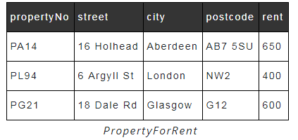

-File-based system is a collection of application programs that perform services for the end-users,such as production of reports.Each program defines and manages its own data.
-Typically,the files are labeled and stored in one or more cabinets.
-For security,the cabinets may have locks or may be located in secure areas of the building.
-When we need to look something up,we go to the filing system and search through the system,starting at the first entry,until we find what we want.
-The manual filing system works well as long as the number of the items to be stored is small.
Separation and isolation of data
-When data is isolated in separate files,it is more difficult to access data that should be available.
-For example,if we want to produce a list of all houses that match the requirements of clients,we first need to create a temporary file of those clients who have "house" as the preferred type.
-With file systems,such processing is difficult.The application developer must synchronize the processing of two files to ensure that the correct data is extracted.
-The difficulty is compounded if we require data from more than two files.
Duplication of data
-Owing to the decentralized approach taken by each department,the file-based approach encouraged,if not necessitated,the uncontrolled duplication of data.
Data dependence
-As mentioned,the physical structure and storage of the data files and records are defined in the application code.This means that changes to an existing structure are difficult to make.
-For example,increasing the size of a PropertyForRent address field from 40 to 41 characters require the creation of a one-off program(that is,a program that is run only once and can then be discarded) that converts PropertyForRent to the new format.
- This program has to :
Incompatible file formats
-Since the structure of files is embedded in the application programs,the structures are dependent on the application programming language.
-For example,the structure of a file that generated by a COBOL program maybe differemt from the structure of a file that generated by a C program.
-Another example,the Contracts Department wants to find the names and addresses of all owners whose property is currently rented out.Unfortunately,Contracts does not hold the details of property owners;only the Sales Department holds these.However,Contracts has the property number (propertyNo),which can be used to find the corresponding property number in the Sales Department's PropertyForRent file.
Fixed queries/proliferation of application programs
-From the end-user's point of view,file-based systems were a great improvement over manual systems.Consequently,the requirement for new or modified queries grew.However,file-based systems are very dependent upon the application developer,who has to write any queries or reports that are required.As a result,two things happened.